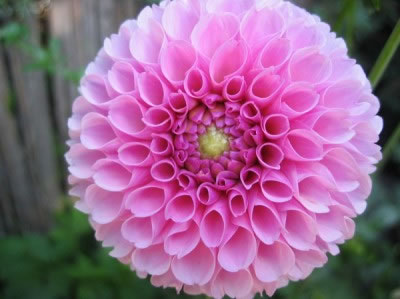

TIPOS DE FLORES
HORTENCIA
 La hortensia es una planta ornamental proveniente del sur y del este de Asia, de zonas de China, de Corea, de Jamón y también de Indonesia y del Himalaya, así como también de distintas zonas de América. Existen muchas variedades o clases de flores, pero suelen ser arbustos de hasta tres metros, otras son árboles pequeños y otras son lianas. La hoja puede ser caduca o perenne, pero las más cultivadas suelen ser caducas
La hortensia es una planta ornamental proveniente del sur y del este de Asia, de zonas de China, de Corea, de Jamón y también de Indonesia y del Himalaya, así como también de distintas zonas de América. Existen muchas variedades o clases de flores, pero suelen ser arbustos de hasta tres metros, otras son árboles pequeños y otras son lianas. La hoja puede ser caduca o perenne, pero las más cultivadas suelen ser caducas
TULIPANES
 Los tulipanes son unas plantas clásicas apreciadas por floristas y amantes de las plantas. Son originarios de Asia y de Europa y también están presentes en algunas zonas de Oriente Medio. Actualmente se cultivan en todo el mundo, en 100 especies diferentes y las flores salen desde bulbos subterráneos. Las variedades de colores que incluyen van desde el amarillo hasta el ciruela pasando por el rojo o el bronce.
Los tulipanes son unas plantas clásicas apreciadas por floristas y amantes de las plantas. Son originarios de Asia y de Europa y también están presentes en algunas zonas de Oriente Medio. Actualmente se cultivan en todo el mundo, en 100 especies diferentes y las flores salen desde bulbos subterráneos. Las variedades de colores que incluyen van desde el amarillo hasta el ciruela pasando por el rojo o el bronce.
DALIAS
> Flores bonitas hay muchas, pero pocas son tan elegantes como las dalias. Éstas son unas plantas que se cultivan durante la primavera desde un bulbo. Son una planta muy apreciada porque presentan tonos realmente bonitos y vivos. Es una planta de jardín que necesita pocos cuidados, aunque necesitará un poco más de atención si se trata de una planta algo más alta. Existen variedades de distinto tamaño y todas necesitan bastante luz solar y un suelo que tenga suficientes nutrientes.